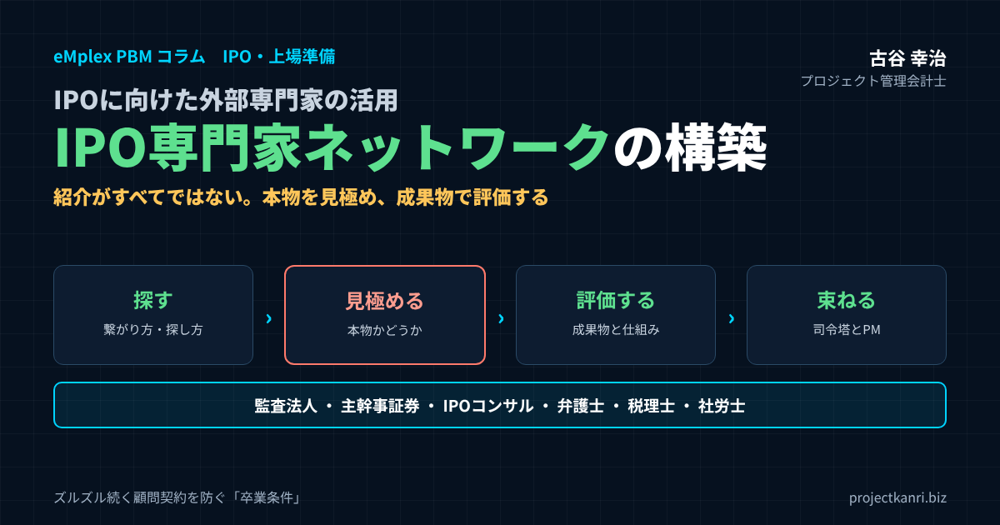

IPO専門家ネットワークの構築とは？外部専門家の活用方法・選び方・繋がり方―監査法人・主幹事証券会社・IPOコンサルタント・士業の役割、本物を見極める方法、紹介に頼りすぎない選定、ズルズル続く契約を防ぐ成果物と仕組みづくりの評価まで

結論：IPOは専門家に任せるものではない。本物を見極め、成果物で評価し、経営者が束ねる
この記事のポイント
- IPOは専門家に任せるものではない。経営者が主体となり、専門家の知見を束ねるプロジェクト
- 専門家は「本物かどうか」の見極めが最重要。実績の数ではなく中身、手を動かした経験、見立ての質で判断する
- 紹介がすべてではない。紹介された専門家もほかの候補と同じ基準で比較する
- 成果の見えない顧問契約がズルズル続くのを防ぐため、成果物・期限・見直し時期・卒業条件を契約時に決める
- 評価の物差しは「成果物」「仕組みが運用されているか」「社内で回せるか」の三つ
プロジェクト管理会計士の古谷です。私は、エンプレックスで取締役CFOとして上場準備に携わり、その後、フロンティアハウスでは上場準備、経営企画、広報IRの責任者としてTOKYO PRO Marketへの上場を経験しました。独立してからは、200社を超える会社の経営管理のご支援をしてきました。その中で、上場準備に関わる多くの外部専門家と一緒に仕事をしてきました。
その経験から最初にお伝えしたいのは、IPOは専門家に任せるものではない、ということです。IPOは、監査法人、主幹事証券会社、IPOコンサルタント、弁護士、税理士、社会保険労務士など、さまざまな専門家の知見を集めながら、経営者が主体となって、上場企業としてふさわしい組織をつくるプロジェクトです。専門家は欠かせない存在ですが、上場するのは会社であり、上場後にその仕組みを動かし続けるのも会社です。
そして、もう一つ強くお伝えしたいのは、専門家は「本物かどうか」を見極めることが何より大切だ、ということです。IPOの世界には、立派な肩書きと豊富な実績をうたう専門家がたくさんいます。しかし、その中には、実際には上場準備の実務に深く関わった経験が少ない人や、助言はするけれども仕組みをつくりきれない人もいます。紹介を受けたから安心、という考え方も危険です。紹介で契約した専門家との関係が、成果の見えないまま何年もズルズルと続いている。私は、そうした会社を数多く見てきました。
専門家を評価する物差しは、肩書きでも紹介者でもなく、成果物と、その成果物によってつくられた仕組みが正しく動いているかどうかです。本記事では、IPOに必要な専門家を探す力、本物を見極める力、専門家同士を繋ぐ力、そして専門家を動かして成果に結びつける力、という四つの視点から、IPO専門家ネットワークの構築方法を解説します。
IPO準備に外部専門家が必要な理由
IPO準備には、会計、法務、税務、労務、内部統制、開示、資本政策など、幅広い専門知識が求められます。上場を目指す会社の多くは、急成長の途中にあり、管理部門の人数も限られています。上場企業の管理部門で求められる水準の知識と経験を、すべて社内の人材だけでまかなうのは、現実的ではありません。
また、上場審査では、会社の内部管理体制が、上場企業としてふさわしい水準で整備され、実際に運用されていることが確認されます。審査の論点を知らずに準備を進めると、審査の段階で大きな手戻りが発生し、上場のスケジュールが遅れることになります。上場準備の経験を持つ専門家の知見は、こうした手戻りを防ぎ、準備の品質と速度を高めるために欠かせません。
外部専門家を活用するメリットは、主に三つあります。一つ目は、社内にない専門知識と経験を、必要な時期に必要な分だけ取り入れられることです。二つ目は、上場審査の論点や、他社の事例を踏まえた助言を受けられることです。三つ目は、社内の人材だけでは手が回らない作業を、期限内に進められることです。
一方で、注意点もあります。外部専門家に頼りすぎると、社内にノウハウが残らず、上場後に仕組みを動かせなくなります。専門家の数が増えすぎると、誰が何に責任を持っているのかが分からなくなります。そして、専門家の質を見極められないと、費用と時間をかけたにもかかわらず、審査に耐える仕組みができていない、という事態になりかねません。外部専門家は、使い方次第で、上場への最短の道にも、遠回りの原因にもなるのです。
| 区分 | 内容 |
|---|---|
| メリット | 社内にない専門知識を必要な時期に必要な分だけ取り入れられる |
| メリット | 上場審査の論点や他社事例を踏まえた助言で手戻りを防げる |
| メリット | 社内だけでは手が回らない作業を期限内に進められる |
| 注意点 | 頼りすぎると社内にノウハウが残らない |
| 注意点 | 専門家が増えすぎると責任の所在が曖昧になる |
| 注意点 | 質を見極められないと、費用をかけても審査に耐える仕組みができない |
なお、外部専門家の活用を考える前に、自社の管理部門の現状を正しく把握しておくことも大切です。経理、財務、総務、人事、経営企画のそれぞれに、どのような人材が何人いて、どのような業務を担っているのか。上場準備で新たに必要になる業務を、誰が担うのか。この整理ができていれば、外部専門家に何を求めるべきかが、自然と明確になります。
IPO準備に必要な外部専門家の種類と役割
IPO準備に関わる主な外部専門家と、その役割を整理すると、次のようになります。
| 専門家 | 主な役割 | 主に関わる時期 |
|---|---|---|
| 監査法人・公認会計士 | 財務諸表の監査、会計処理・内部管理体制の指導・助言 | N-3期〜上場後 |
| 主幹事証券会社 | 資本政策・社内体制整備の助言、引受審査、上場手続き | N-2期〜上場 |
| IPOコンサルタント | 上場準備の計画、規程・業務フロー整備、申請書類の作成支援 | N-3期〜申請期 |
| 弁護士 | 契約・規程の確認、コンプライアンス体制、法的課題の整理 | N-3期〜上場後 |
| 税理士 | 税務申告、資本政策・組織再編に伴う税務 | 全期間 |
| 社会保険労務士 | 労働時間管理、未払い残業代の確認、就業規則の整備 | N-3期〜N-1期 |
| 内部監査・J-SOXの専門家 | 内部監査体制の構築、内部統制の整備支援 | N-2期〜上場後 |
| 社外取締役・常勤監査役 | 取締役会・監査役会の機能発揮、ガバナンス | N-2期〜上場後 |
| CFO・IPO実務経験者 | 上場準備の統括、管理部門の構築 | 全期間 |
| 証券代行機関 | 株主名簿管理など株式事務 | N-1期〜上場後 |
監査法人は、上場申請に必要な財務諸表の監査を行います。上場の際の監査人は、日本公認会計士協会の上場会社等監査人名簿に登録された監査法人または公認会計士である必要があります。監査法人は、会計監査を通じて、会計処理や内部管理体制について指導や助言を行いますが、監査人としての独立性を保つ必要があるため、会社に代わって会計処理を行ったり、仕組みを構築したりする立場ではありません。
主幹事証券会社は、上場申請の準備段階では、資本政策や社内体制整備の助言、上場手続きのサポート、公募や売出しを引き受けるための会社の審査、いわゆる引受審査などを行います。主幹事証券会社は、取引所に対して、申請会社の上場適格性についての報告書を提出する役割も担います。
IPOコンサルタントは、上場準備の全体計画の策定、課題の洗い出し、規程や業務フローの整備、申請書類の作成支援など、会社の上場準備の実務を支援します。監査法人や主幹事証券会社と異なり、資格や登録の制度があるわけではありませんので、その質には大きな差があります。本物を見極める力が最も問われるのが、このIPOコンサルタントの選定です。
弁護士は、契約書や規程の確認、コンプライアンス体制の整備、反社会的勢力との関係の確認、過去の法的な問題の整理などを支援します。税理士は、税務申告や、資本政策に伴う株式の移動の税務、組織再編の税務などを支援します。社会保険労務士は、労働時間の管理、未払い残業代の有無の確認、就業規則の整備など、労務管理の整備を支援します。労務の問題は上場審査で重視される論点の一つであり、早めの対応が欠かせません。
このほかにも、内部監査やJ-SOX対応の専門家、社外取締役や常勤監査役となる人材、CFOや上場準備の実務経験者、株式事務を担う証券代行機関、上場準備に対応した会計システムや管理システムのベンダーなど、さまざまな専門家が関わります。大切なのは、それぞれの専門家が、何に責任を持ち、何に責任を持たないのかを、正しく理解しておくことです。
IPO準備フェーズ別の外部専門家の活用方法
外部専門家は、上場準備のどの時期に、誰を活用するのかを計画しておくことが大切です。上場申請の期を「N期」とすると、一般的には次のような流れになります。
| フェーズ | 主な取り組み | 中心となる専門家 |
|---|---|---|
| N-3期 | IPO構想、ショートレビュー、課題の洗い出し、資本政策の検討 | 監査法人、IPOコンサルタント、税理士 |
| N-2期 | 監査開始、主幹事決定、規程・業務フロー・予算統制・労務管理の整備 | 監査法人、主幹事証券会社、IPOコンサルタント、社労士、弁護士 |
| N-1期 | 仕組みの運用と実績の積み上げ、引受審査対応、内部監査の運用 | 主幹事証券会社、監査法人、内部監査の専門家 |
| N期（申請期） | 申請書類の作成、上場審査対応、開示体制の最終確認 | 主幹事証券会社、監査法人、証券代行機関 |
時期は一般的な目安です。会社の状況や目指す市場によって異なります。
N-3期は、IPOの構想を固め、課題を洗い出す時期です。この時期には、監査法人などによる短期調査、いわゆるショートレビューを受けて、上場に向けた課題を把握します。あわせて、上場準備の全体計画を立て、どの課題を社内で対応し、どの課題に外部専門家の支援が必要なのかを整理します。資本政策の検討も、この時期から始めます。
N-2期は、内部管理体制の構築を本格的に進める時期です。監査法人による監査が始まり、主幹事証券会社も決まっていきます。規程の整備、業務フローの見直し、予算統制や月次決算の早期化、労務管理の整備などを進めます。この時期に、外部専門家の力を借りて仕組みをつくり、それを社内で運用できる状態にしておくことが、上場の成否を分けます。
N-1期は、整備した仕組みを運用し、その運用の実績を積み上げる時期です。主幹事証券会社による引受審査への対応が本格化し、内部監査の運用も求められます。N期、つまり申請期には、申請書類の作成、取引所の上場審査への対応、開示体制の最終確認などを行います。
フェーズごとに必要な専門家は変わります。N-3期に必要だった専門家が、N-1期にも同じように必要とは限りません。逆に、N-1期になって初めて必要になる専門家もいます。専門家との契約を、フェーズの区切りごとに見直すことが、後で述べる「ズルズル続く契約」を防ぐための第一歩になります。
本物の専門家を見極める―肩書きと実績の「中身」を確かめる
外部専門家の選定で、最も大切なのが、本物かどうかの見極めです。IPOの専門家を名乗る人は大勢いますが、その経験と実力には、驚くほど大きな差があります。
まず確かめたいのは、実績の中身です。「上場支援実績○社」という言葉は、よく見かけます。しかし、その「支援」の中身はさまざまです。上場準備の最初から最後まで、実務の中心として関わったのか。一部の規程の整備だけを手伝ったのか。セミナーで知り合った会社が、たまたま後に上場しただけなのか。数字だけでは、その違いは分かりません。具体的に、どの会社の、どの時期に、どのような立場で、何をしたのかを聞いてみてください。守秘義務で社名が言えない場合でも、市場、業種、規模、担当した範囲、苦労した論点は話せるはずです。
次に確かめたいのは、実際に手を動かした経験があるかどうかです。IPO準備では、規程や業務フロー、予算の仕組み、月次決算の手順、申請書類など、膨大な成果物をつくる必要があります。助言だけをしてきた人と、実際に自分の手で成果物をつくり、それを現場で運用させてきた人とでは、提案の具体性がまったく違います。過去につくった成果物のひな形や、運用のための工夫を、守秘義務に反しない範囲で見せてもらうと、その人の実力がよく分かります。
三つ目は、失敗や苦労の経験を語れるかどうかです。本物の専門家ほど、上場準備がうまくいかなかった事例や、審査で指摘を受けた論点、スケジュールが遅れた原因を、具体的に語ることができます。成功談しか語らない専門家は、実務の深いところまで関わっていない可能性があります。
四つ目は、会社の看板ではなく、担当者個人の力を見ることです。大手の事務所やコンサルティング会社であっても、実際に担当するのは、経験の浅い若手かもしれません。逆に、小さな事務所でも、豊富な経験を持つ専門家が直接担当してくれることもあります。契約の前に、実際に担当する人に会い、その人の経験を確認することが大切です。
| 確認したいこと | 質問の例 | 見極めのポイント |
|---|---|---|
| 実績の中身 | どの市場で、どの立場で、何を担当しましたか | 具体的な範囲と役割を語れるか |
| 手を動かした経験 | ご自身でつくった成果物を見せていただけますか | 守秘義務の範囲で具体例を示せるか |
| 失敗の経験 | 審査で指摘を受けた論点や、遅れた原因は何でしたか | 苦労を具体的に語れるか |
| 担当者 | 実際に担当される方はどなたですか | 契約前に担当者と会えるか |
| 見立ての質 | 当社の状況で、最初に論点になるのは何ですか | 業種・規模に即した具体的な指摘があるか |
そして五つ目は、自社の課題に対する見立ての質です。初回の面談で、自社の状況を説明したときに、本物の専門家は、すぐに具体的な論点を指摘します。「この業種なら、売上の計上時期が論点になります」「この人数規模なら、経理と財務の分離が課題になるでしょう」「この労働時間の管理の仕方では、審査で必ず確認されます」。こうした見立てが、具体的で、的を射ているかどうか。初回の面談は、専門家が会社を見ているだけでなく、会社が専門家を見極める場でもあります。
専門家の種類別に見る「本物」の見極めポイント
本物かどうかを見極めるポイントは、専門家の種類によっても異なります。主な専門家について、私が特に確認するようにしている点をまとめておきます。
| 専門家 | 特に確認したい点 |
|---|---|
| IPOコンサルタント | 成果物をつくり、現場で運用させた経験。事業会社側での責任者経験 |
| 監査法人 | IPO監査の経験、実際の担当者の経験、上場会社等監査人名簿への登録 |
| 主幹事証券会社 | 同じ業種・市場での引受実績、担当者の継続性 |
| 社会保険労務士 | 上場準備会社の労務管理体制の整備に関わった経験 |
| 弁護士 | 上場準備会社の法務・コンプライアンス体制整備の経験 |
| 社外取締役・常勤監査役 | 取締役会・監査役会で果たしてきた実際の役割 |
| 管理会計・予算制度の専門家 | 予算策定だけでなく予実管理の運用まで支援した経験 |
IPOコンサルタントについては、前述のとおり、実際に手を動かして成果物をつくった経験と、その成果物を現場で運用させた経験があるかを重視します。上場準備の経験が、事業会社の側で責任者として関わったものなのか、外部の立場で関わったものなのかも確認しておくとよいでしょう。会社の側で上場準備の責任を負った経験のある人は、社内を動かすことの難しさを知っています。
社会保険労務士については、上場準備会社の労務管理の整備に関わった経験があるかを確認します。日常の手続き業務と、上場審査に耐える労務管理の体制づくりとでは、求められる知識と経験が異なります。労働時間の管理の実態をどのように調べ、どのように改善策を立てるのか、具体的な進め方を聞いてみると、経験の深さが分かります。
社外取締役や常勤監査役となる人材については、肩書きや知名度よりも、取締役会や監査役会で、実際にどのような役割を果たしてきたのかを確認します。経営に対して率直に意見を述べ、必要なときには耳の痛いことも言える人かどうか。上場企業の役員として、その責任を理解しているかどうか。名前を借りるだけの役員では、ガバナンスは機能しません。
管理会計や予算制度の専門家については、予算をつくるだけでなく、予算と実績を比較し、差異を分析し、着地見込みを更新するという、予算統制の運用までを支援した経験があるかを確認します。上場審査では、予算の策定だけでなく、予実管理の運用状況や、業績予想の精度が問われます。仕組みをつくって終わりではなく、毎月の運用を回せるところまで支援できるかどうかが、本物かどうかの分かれ目です。
初回面談と提案書で見るべきポイント
外部専門家を選ぶとき、多くの場合、初回の面談を経て、提案書と見積書を受け取ります。この段階で、本物かどうかを見極めるための手がかりは、たくさんあります。
まず、初回の面談で、専門家が、会社の話をどれだけ聞いているかに注目します。本物の専門家は、自分の実績を長々と話すよりも、会社の事業、組織、数字、課題について、具体的な質問をたくさんします。質問の内容が的確であれば、その専門家は、会社の課題を正しく理解しようとしていると考えられます。
次に、提案書の中身です。どの会社にも出せるような一般的な内容になっていないか。会社の課題に即して、何を、いつまでに、どのような成果物として提供するのかが具体的に書かれているか。成果物が曖昧で、「上場準備全般のご支援」「随時のご相談対応」といった表現ばかりの提案書は、後で成果が見えなくなる契約の典型です。
そして、見積書です。費用の内訳が、成果物や作業の単位で示されているか。月額の顧問料だけが書かれていて、その費用で何が得られるのかが分からない見積書には注意が必要です。また、契約期間と、契約を見直す時期、契約を終了する条件が明記されているかも確認します。
| チェック項目 | 良い例 | 注意したい例 |
|---|---|---|
| 課題の理解 | 自社の課題に即した具体的な記載 | どの会社にも出せる一般論 |
| 成果物 | 成果物の名称・範囲・品質が明記 | 「上場準備全般の支援」 |
| 期限 | 成果物ごとの期限が明記 | 期限の記載がない |
| 費用 | 成果物・作業単位の内訳 | 月額顧問料のみ |
| 見直し・終了 | 見直し時期と終了条件が明記 | 自動更新のみ |
提案書に不明な点があれば、遠慮せずに質問し、必要であれば修正を求めましょう。成果物と期限を明確にすることを嫌がる専門家は、そもそも成果に責任を持つつもりがないのかもしれません。
紹介がすべてではない―紹介の価値と限界
IPOの専門家との出会いは、紹介によることが多いものです。監査法人から、証券会社から、ベンチャーキャピタルから、金融機関から、知り合いの経営者から。紹介には、一定の信頼の裏付けがありますので、まったく知らない専門家を探すよりも、安心感があります。
しかし、紹介がすべてではありません。紹介には、いくつかの限界があります。
一つ目は、紹介者が、専門家の実力を正確に把握しているとは限らないことです。紹介者は、その専門家と仕事をした経験があるかもしれませんが、それは別の会社の、別の状況での経験です。自社の業種や規模、課題に合っているかどうかは、紹介者にも分かりません。
二つ目は、紹介の背景に、さまざまな関係や事情がある場合があることです。紹介者と専門家の間に、取引関係や紹介料のやり取りがあるかもしれません。それ自体が悪いわけではありませんが、紹介が、純粋に会社のためだけに行われているとは限らない、ということは知っておく必要があります。
三つ目は、紹介を受けると、断りにくくなることです。紹介者との関係を考えて、本来であれば比較検討すべきところを、そのまま契約してしまう。契約した後も、成果が出ていないのに、紹介者の手前、契約を見直せない。これが、ズルズルと契約が続く大きな原因の一つです。
紹介を受けた専門家であっても、ほかの候補と同じ基準で評価することが大切です。可能であれば、複数の候補と面談し、比較してから決めましょう。紹介者には、「ご紹介いただいた方も含めて、何人かとお会いして決めたい」と、最初に伝えておくとよいでしょう。本当に会社のことを考えている紹介者であれば、それを嫌がることはないはずです。
| 観点 | 紹介の価値 | 紹介の限界・対策 |
|---|---|---|
| 信頼 | 一定の信頼の裏付けがある | 自社との相性までは保証されない→同じ基準で比較 |
| 背景 | 紹介者の人脈を活用できる | 紹介料など別の事情もありうる→関係を確認 |
| 関係 | 最初の接点がつくりやすい | 断りにくく見直しにくい→比較する旨を最初に伝える |
また、紹介者に、その専門家の何を評価しているのかを具体的に聞いてみるのも有効です。「誠実な人です」「経験が豊富です」といった一般的な評価ではなく、「あの会社の上場準備で、労務の問題をこう解決した」といった具体的な話が出てくるかどうか。具体的な話が出てこない場合は、紹介者自身も、その専門家の仕事ぶりを詳しくは知らないのかもしれません。
ズルズル続く契約を防ぐ―成果が見えない顧問契約の典型パターン
IPO準備の外部専門家との関係で、私が最もよく目にする問題が、成果の見えない契約がズルズルと続くことです。毎月の顧問料は払い続けているのに、上場準備がどこまで進んだのかが分からない。気がつけば、当初の上場予定時期を何年も過ぎている。こうしたケースには、いくつかの典型的なパターンがあります。
一つ目は、定例会議だけが続くパターンです。月に一度、専門家が来社して定例会議を開き、課題を確認する。しかし、会議で確認された課題は、次の会議でも同じように残っている。会議の議事録は積み上がるのに、成果物は増えない。
二つ目は、課題リストが更新されないパターンです。最初のショートレビューや課題の洗い出しで作成した課題リストが、その後、何か月も更新されていない。どの課題が解決し、どの課題が残っているのか、誰も正確に把握していない。
三つ目は、専門家にとって、上場時期が延びるほど都合が良い構造になっているパターンです。月額の顧問料で契約していると、上場準備が長引けば長引くほど、専門家の収入は増えます。もちろん、多くの専門家は誠実に仕事をしていますが、契約の構造として、早く成果を出すことへの動機が弱くなっていることは否定できません。
四つ目は、社内の担当者が専門家に依存してしまうパターンです。専門家がいなければ何も進まない状態になり、会社の側から契約を見直すことができなくなります。専門家との関係が長くなるほど、この依存は強くなります。
| パターン | 兆候 | 対策 |
|---|---|---|
| 定例会議だけが続く | 議事録は増えるが成果物が増えない | 会議ごとに成果物と判断事項を確認 |
| 課題リストが更新されない | 数か月前の課題リストのまま | 課題管理表を共有し毎月更新 |
| 長引くほど都合が良い構造 | 月額顧問で期限の定めがない | 期間・成果物・卒業条件を契約に明記 |
| 社内が専門家に依存 | 専門家がいないと何も進まない | 社内担当者が作成過程に参加 |
こうした状態を防ぐためには、契約の時点で、何を、いつまでに、どのような状態にするのかを決めておくことが欠かせません。期間を区切った契約にし、フェーズの区切りごとに成果を確認して、契約を継続するか、内容を変えるか、終了するかを判断する。そして、契約の終わり、つまり「卒業」の条件を、最初から決めておくのです。
卒業条件の決め方と契約見直しの進め方
ズルズル続く契約を防ぐために、最も効果的なのが、契約の最初に「卒業の条件」を決めておくことです。卒業の条件とは、どのような状態になれば、その専門家の支援を終える、あるいは支援の範囲を縮小するのか、という条件です。
たとえば、予算制度の構築を依頼する場合であれば、「予算策定の手順書が完成し、社内の担当者だけで翌期の予算を策定でき、月次の予実分析を三か月連続で期限内に完了できたら卒業」というように決めます。成果物ができたことだけでなく、社内で運用できるようになったことを、卒業の条件に含めるのがポイントです。
| 支援テーマ | 卒業条件の例 |
|---|---|
| 予算制度の構築 | 手順書が完成し、社内だけで翌期予算を策定、月次予実分析を3か月連続で期限内に完了 |
| 月次決算の早期化 | 決算手順書が完成し、社内だけで目標日数内の締めを3か月連続で達成 |
| 内部監査の立ち上げ | 年間計画を策定し、社内担当者が1サイクルの監査と報告を完了 |
| 労務管理の改善 | 勤怠の記録と実態の乖離を解消し、社内で月次チェックを運用 |
契約の見直しは、フェーズの区切りや、半年ごとなど、あらかじめ決めた時期に行います。見直しの場では、契約時に決めた成果物の完成状況、仕組みの運用状況、社内で回せるようになった範囲を確認し、継続、範囲の変更、終了のいずれかを判断します。この判断を、専門家と一緒に行うことも大切です。誠実な専門家であれば、自分の支援が必要なくなったことを、むしろ成果として喜んでくれるはずです。
見直しの結果、契約を終了する場合でも、関係を断つ必要はありません。必要なときにスポットで相談できる関係を残しておけば、専門家のネットワークとしての価値は保たれます。契約の終了は、関係の終わりではなく、関係の形を変えることだと考えましょう。
成果物と仕組みづくりで評価する―「正しい仕組み」ができているか
外部専門家を評価する物差しは、何でしょうか。私は、成果物と、その成果物によってつくられた仕組みが正しく動いているかどうか、だと考えています。
IPO準備における成果物とは、規程、業務フロー、職務権限表、リスクとコントロールの一覧、予算の策定と管理の仕組み、月次決算の手順、開示の手順、内部監査の計画と報告、労務管理の改善策、申請書類などです。こうした成果物が、期限どおりに、必要な品質でつくられているか。これが、評価の第一の物差しです。
しかし、成果物ができているだけでは十分ではありません。規程が立派に整っていても、現場がその規程のとおりに動いていなければ、意味がありません。上場審査では、仕組みが整備されているだけでなく、実際に運用されていることが確認されます。評価の第二の物差しは、その仕組みが、現場で実際に運用されているかどうかです。
そして第三の物差しは、その仕組みを、専門家がいなくなっても、社内の人材だけで動かし続けられるかどうかです。専門家がつくった仕組みが、専門家にしか分からないものであれば、上場後に必ず行き詰まります。社内の担当者が仕組みの意味を理解し、自分たちで改善していける状態になっているか。これこそが、本物の専門家の仕事の証です。
| 物差し | 確認すること | よくない状態の例 |
|---|---|---|
| ①成果物 | 期限どおりに必要な品質でできているか | ひな形を流用しただけの規程 |
| ②運用 | 現場が実際にその仕組みで動いているか | 規程はあるが誰も守っていない |
| ③自走 | 専門家がいなくても社内で回せるか | 専門家しか仕組みの意味が分からない |
仕組みが正しいかどうかを判断するときには、その仕組みが、会社の実態に合っているかどうかも確認してください。大企業向けのひな形をそのまま持ち込んだ規程や業務フローは、一見すると立派ですが、少人数の管理部門では運用しきれません。会社の規模と業務の実態に合わせて、必要十分な仕組みを設計できるかどうか。ここに、専門家の実力の差が最も表れます。私がこれまで見てきた中でも、過剰な仕組みを導入して現場が疲弊し、結局は形だけの運用になってしまった例は、少なくありません。
成果物の評価は、社内の人間だけでは難しいこともあります。その場合は、監査法人や主幹事証券会社の担当者に、「この仕組みで審査上の問題はないか」と意見を求めるのも一つの方法です。複数の専門家の目を通すことで、一人の専門家の判断に偏るリスクを減らすことができます。
さらに、成果物を評価するときには、上場後の姿を想定することも大切です。上場後には、四半期ごとの決算と開示、内部統制報告制度への対応、業績予想の開示と修正の判断など、上場準備の段階よりも高い頻度と精度で、仕組みを回し続ける必要があります。上場準備のためだけに整えた、その場しのぎの仕組みは、上場後の負荷に耐えられません。上場後も無理なく回せる仕組みになっているかどうか。この視点で成果物を見ると、専門家の仕事の質がよりはっきりと見えてきます。
停滞した上場準備を立て直す―成果物と仕組みの棚卸し
すでに外部専門家と契約しているものの、上場準備が停滞していると感じている会社もあるでしょう。その場合に最初に行うべきなのが、成果物と仕組みの棚卸しです。
棚卸しの方法は、シンプルです。上場準備に必要な成果物を一覧にし、それぞれについて、完成しているか、運用されているか、社内で回せるか、を確認します。あわせて、その成果物の担当がどの専門家で、いつから取り組んでいて、これまでにいくらの費用をかけてきたのかも書き出します。
| 成果物 | 担当 | 完成 | 運用 | 社内で回せる | 経過期間 |
|---|---|---|---|---|---|
| 職務権限規程 | コンサルタントA | ○ | △ | × | 18か月 |
| 予算管理の仕組み | コンサルタントA | △ | × | × | 24か月 |
| 勤怠管理の改善 | 社労士B | ○ | ○ | △ | 8か月 |
| 内部監査計画 | 未定 | × | × | × | － |
○：できている／△：一部できている／×：できていない
棚卸しをすると、多くの場合、驚くような事実が見えてきます。何年も前から取り組んでいるのに、いまだに完成していない成果物。完成はしているが、誰も運用していない規程。専門家が毎月作成しているが、社内の誰も中身を理解していない資料。こうした事実が見えれば、どこに問題があるのか、どの契約を見直すべきなのかが、はっきりします。
棚卸しの結果をもとに、残りの課題と期限を整理し直し、上場準備の計画を立て直します。その際、これまでの専門家との契約を見直す必要が出てくることもあるでしょう。その判断は、感情や人間関係ではなく、棚卸しで明らかになった事実に基づいて行います。事実に基づく判断であれば、紹介者にも、専門家自身にも、そして必要であれば取引所や主幹事証券会社にも、その経緯を説明することができます。
IPO専門家との繋がり方・探し方
IPOの専門家とは、どのようにして繋がればよいのでしょうか。主な方法を整理すると、次のようになります。
| 経路 | 特徴 | 注意点 |
|---|---|---|
| 監査法人・証券会社からの紹介 | 上場準備会社の事情に詳しい | 同じ基準で比較する |
| IPO経験者の人脈 | 評判や実際の苦労を知っている | 日頃から関係を築いておく |
| 金融機関・VCからの紹介 | 成長企業の支援実績がある | 紹介の背景を確認する |
| 日本公認会計士協会の情報 | 中小監査事務所リストなどが公表されている | 自社との相性は面談で確認 |
| セミナー・交流会・マッチング | 多くの候補に出会える | 登壇や登録は実力の証明ではない |
| 社外役員・CFOの紹介 | 経営人材のネットワークを活用できる | ネットワークの質も確認する |
監査法人や主幹事証券会社からの紹介は、IPO準備でよく使われる方法です。監査法人や証券会社は、多くの上場準備会社を見ていますので、その会社の課題に合った専門家を知っていることがあります。ただし、前述のとおり、紹介を受けた専門家も、ほかの候補と同じ基準で評価することが大切です。
監査法人を探す場面では、日本公認会計士協会が公表している情報も参考になります。日本公認会計士協会は、IPOを目指す会社向けのガイドブックを公表しているほか、大手や準大手の監査法人だけでなく、上場準備会社の監査を担う中小規模の監査事務所のリストも、ウェブサイトに掲載しています。
IPOの経験者との人脈は、上場準備の大きな財産になります。上場を経験したCFOや経営企画の責任者、管理部門の責任者は、専門家の評判や、実際の上場準備で何が大変だったのかを知っています。上場を経験した経営者のコミュニティや、管理部門の勉強会などに参加して、こうした人たちとの関係を築いておくと、専門家を選ぶときの貴重な相談相手になります。
金融機関やベンチャーキャピタルからの紹介、IPO関連のセミナーや交流会への参加、専門家のマッチングサービスの活用も、選択肢の一つです。ただし、セミナーで登壇していることや、マッチングサービスに登録していることは、実力の証明にはなりません。出会いの経路がどこであれ、見極めの基準は同じです。
社外取締役や常勤監査役、CFOといった経営人材は、それ自体が専門家であると同時に、新たな専門家を紹介してくれる、ネットワークの入り口にもなります。経営人材を迎えるときには、その人のネットワークの広さと質も、一つの判断材料になります。
どの経路で出会った専門家であっても、最初に会った段階で決めてしまわないことが大切です。少なくとも二人から三人の候補と会い、同じ質問をして、答えを比べてみてください。比べることで、初めて、それぞれの専門家の強みと弱みが見えてきます。
外部専門家を選定する際の評価基準
外部専門家を選ぶときには、あらかじめ評価の基準を決め、複数の候補を同じ基準で比較することをお勧めします。私がお勧めしている評価の基準は、次のとおりです。
| 評価項目 | 確認すること | 配点の例 |
|---|---|---|
| IPO支援実績と市場理解 | 実績の中身、目指す市場での経験 | 25点 |
| 業界・事業モデルの理解 | 業界特有の論点を理解しているか | 20点 |
| 実務遂行能力・スピード | 成果物をつくる力、対応の速さ | 25点 |
| 相性・コミュニケーション | 言いにくいことを伝え、社内を育てられるか | 15点 |
| 報酬体系と費用対効果 | 成果物と費用の対応が明確か | 15点 |
配点は一例です。複数の候補を同じ基準で比較するために使います。
IPOの支援実績では、前述のとおり、実績の数ではなく中身を確認します。目指す市場への理解も大切です。プライム市場、スタンダード市場、グロース市場、TOKYO PRO Marketでは、上場の要件や審査の観点が異なります。目指す市場での経験があるかどうかを確認しましょう。
業界と事業モデルへの理解も重要です。たとえば、プロジェクト型ビジネスの会社であれば、売上の計上時期や、プロジェクト別の原価の集計、仕掛品の評価といった論点が、上場準備の大きな課題になります。こうした業界特有の論点を理解している専門家とそうでない専門家とでは、支援の質が大きく変わります。
実務遂行能力と対応のスピードは、契約前の面談だけでは分かりにくい部分です。最初は小さな範囲や短い期間の契約から始めて、実際の仕事ぶりを確認してから、範囲を広げていく、という方法も有効です。
経営陣との相性とコミュニケーションの力も、見落とせません。上場準備は、数年にわたる長い取り組みです。経営者に対して、言いにくいことでもはっきりと伝えてくれる専門家かどうか。社内の担当者に、分かりやすく説明し、育ててくれる専門家かどうか。こうした点も、評価の対象に入れておきましょう。
報酬体系と費用対効果については、次の章で詳しく説明します。
契約形態と費用対効果―顧問契約・スポット契約・プロジェクト型の使い分け
外部専門家との契約には、大きく分けて、月額の顧問契約、特定の業務を単発で依頼するスポット契約、成果物と期限を決めて依頼するプロジェクト型の契約があります。それぞれに向き不向きがありますので、目的に応じて使い分けます。
| 契約形態 | 向いている業務 | 注意点 |
|---|---|---|
| 顧問契約 | 継続的な相談、日々の判断の支援 | 成果が見えにくい。半年〜1年ごとに見直す |
| スポット契約 | 意見書、短期調査、特定の規程の作成 | 範囲を明確にする |
| プロジェクト型 | 予算制度の構築、月次決算の早期化、内部監査の立ち上げ | 成果物・期限・品質を明記する |
| 人材の採用 | 上場後も続く業務の担い手 | 採用は容易ではない。外部支援と組み合わせる |
顧問契約は、継続的に相談できる関係を築けるのが利点です。上場準備の全期間を通じて、日々の判断について相談したい場面では、顧問契約が向いています。一方で、前述のとおり、成果が見えにくく、ズルズルと続きやすいという弱点があります。顧問契約を結ぶ場合でも、半年や一年ごとに、何を達成したのかを振り返り、契約を見直す時期を決めておきましょう。
スポット契約は、特定の論点についての意見書や、短期の調査、特定の規程の作成など、範囲がはっきりしている業務に向いています。費用の見通しが立てやすく、成果物も明確です。
プロジェクト型の契約は、「この期限までに、この成果物を、この品質でつくる」と決めて依頼する契約です。予算制度の構築、月次決算の早期化、内部監査体制の立ち上げなど、一定の期間で仕組みをつくり上げる業務に向いています。成果物と期限が明確なため、ズルズル続く契約を防ぎやすいという利点があります。
費用対効果を考えるときには、契約金額の総額だけでなく、その費用で何が得られたのかを見ることが大切です。月額の顧問料が安くても、何年も続けば総額は大きくなります。逆に、一時的に大きな費用がかかっても、短期間で仕組みができ、社内で運用できるようになれば、費用対効果は高いといえます。上場準備にかかる外部専門家の費用を、予算として管理し、成果物と対応づけて振り返ることをお勧めします。
また、外部専門家に依頼するか、社内に人材を採用するか、という比較も必要です。上場準備の経験を持つ人材を採用できれば、上場後も社内にノウハウが残ります。一方で、そうした人材の採用は容易ではありません。外部専門家に仕組みをつくってもらいながら、社内の人材を育て、最終的には社内で運用できる状態にする、という組み合わせが現実的なことが多いでしょう。
上場準備にかかる外部専門家の費用は、会社の規模、課題の多さ、依頼する範囲によって大きく異なります。一般的な相場だけで判断せず、複数の候補から見積を取り、成果物の内容と費用を比較してください。安さだけで選ぶと、必要な成果物が得られず、結局は別の専門家に依頼し直すことになり、かえって費用がかさむこともあります。
外部専門家を活用する際の注意点
外部専門家を活用するうえでの注意点を、五つに整理しておきます。
一つ目は、専門家を増やしすぎないことです。課題が見つかるたびに新しい専門家を加えていくと、専門家の数が増え、誰が何に責任を持っているのかが分からなくなります。専門家同士の意見が食い違ったときに、誰が判断するのかも曖昧になります。必要な専門家を、必要な範囲で選ぶことが大切です。
二つ目は、責任の範囲と役割分担を明確にすることです。どの専門家が、どの成果物に責任を持つのか。社内の誰が、その専門家の窓口となり、成果物を受け取るのか。これを一覧にして、関係者で共有しておきます。
| 成果物 | 担当する専門家 | 社内の担当 | 期限 |
|---|---|---|---|
| 職務権限規程・稟議規程 | IPOコンサルタント（弁護士が確認） | 総務責任者 | N-2期第2四半期 |
| 予算策定・管理の仕組み | 管理会計の専門家 | 経営企画責任者 | N-2期第3四半期 |
| 勤怠管理の改善 | 社会保険労務士 | 人事責任者 | N-2期第2四半期 |
| 内部監査計画・報告 | 内部監査の専門家 | 内部監査担当者 | N-1期第1四半期 |
三つ目は、丸投げせず、社内にノウハウを蓄積することです。専門家がつくった成果物を受け取るだけでなく、社内の担当者が、つくる過程に参加することが大切です。なぜこの規程が必要なのか、なぜこの手順なのかを理解していなければ、上場後に仕組みを改善することはできません。
四つ目は、専門家同士の連携を設計することです。監査法人、主幹事証券会社、IPOコンサルタント、弁護士、社会保険労務士などが、それぞれ別々に会社とやり取りしていると、同じ論点について異なる助言を受け、混乱することがあります。重要な論点については、関係する専門家が同じ場で議論する機会を設けましょう。
五つ目は、利益相反と独立性に配慮することです。監査法人は、監査人としての独立性を保つ必要があるため、自ら監査する会社の仕組みづくりを代行する立場にはありません。仕組みづくりの支援は、監査法人とは別の専門家に依頼する必要があります。また、紹介者と専門家の間の関係や、専門家が別の立場で会社と取引していないかなども、確認しておきましょう。
プロジェクト型ビジネスのIPOで外部専門家に求めること
システム開発、コンサルティング、建設、映像制作など、プロジェクト型ビジネスの会社が上場を目指す場合、外部専門家に求めるべき知見があります。
プロジェクト型ビジネスでは、売上の計上時期、プロジェクト別の原価の集計、仕掛品の評価、赤字プロジェクトの損失の見積りといった論点が、会計監査と上場審査の大きな論点になります。特に、プロジェクトの進捗に応じて売上を計上する場合には、進捗度の見積りの根拠や、原価の集計の正確さが問われます。
これらの論点に対応するためには、タイムシートで工数を記録し、工数と労務費をプロジェクトに正しく集計する仕組みが欠かせません。また、プロジェクトごとの予算と実績を比較し、着地見込みを更新する仕組みも必要です。こうした仕組みは、会計の知識だけでなく、プロジェクトの現場の業務を理解していなければ、設計することができません。
外部専門家を選ぶときには、プロジェクト型ビジネスの原価管理や売上計上の論点について、具体的な経験と知見を持っているかを確認してください。この点を理解していない専門家が設計した仕組みは、現場の業務と合わず、運用が定着しないことが少なくありません。
また、プロジェクト型ビジネスでは、少数の大型プロジェクトの成否が、会社全体の業績を大きく左右することがあります。上場審査では、業績予想の合理性や、予算と実績の乖離の理由が確認されますので、プロジェクトごとの着地見込みを積み上げて全社の業績見通しをつくる仕組みは、審査への対応という点でも重要です。
専門家を動かす力―IPO準備をプロジェクトとして管理する
本物の専門家を選び、適切な契約を結んだとしても、それだけで上場準備が進むわけではありません。専門家を動かし、成果に結びつけるのは、会社の側の役割です。ここで力を発揮するのが、プロジェクト管理の考え方です。
IPO準備は、期限が決まっていて、多くの関係者が関わり、多くの成果物をつくる必要がある、典型的なプロジェクトです。プロジェクトとして管理するために、まず、上場までのスケジュールを、フェーズごとのマイルストーンに分解します。次に、マイルストーンごとに必要な成果物を洗い出し、それぞれの成果物について、担当する専門家、社内の担当者、期限を決めます。そして、課題管理表で、課題の状況を一元的に管理します。
定例会議は、この課題管理表をもとに進めます。会議の目的は、課題を確認することではなく、課題を解決するための判断をすることです。期限を過ぎた課題はないか、その原因は何か、誰がいつまでに何をするのか。こうした判断を、会議のたびに積み重ねていきます。
| 仕組み | 内容 |
|---|---|
| マイルストーン | 上場までをフェーズごとの到達点に分解 |
| 成果物一覧 | 成果物ごとに担当専門家・社内担当・期限を設定 |
| 課題管理表 | 課題の状況を一元管理し、専門家と共有 |
| 定例会議 | 課題の確認ではなく、解決のための判断の場にする |
| 費用の予実管理 | 専門家ごと・成果物ごとに予算と実績を管理 |
このプロジェクト管理を担うのが、CFOや経営企画の責任者、あるいは上場準備室の責任者です。この人が、専門家全体を束ねる司令塔になります。司令塔がいない会社では、専門家がそれぞれの判断で動き、全体としての整合が取れなくなります。司令塔は、専門家と対等に議論できるだけの知識を持ち、経営者の意向を理解し、社内の各部門を動かせる立場にあることが必要です。
また、外部専門家にかかる費用も、プロジェクトの予算として管理します。上場準備の費用を、専門家ごと、成果物ごとに予算と実績で管理しておけば、費用対効果を振り返ることができ、契約の見直しの判断にも役立ちます。
司令塔に求められるのは、専門知識の深さよりも、全体を見渡す力と、判断を先送りしない力です。専門家の助言を聞いたうえで、会社としてどうするのかを決め、決めたことを社内で実行させる。この役割を担える人材が社内にいない場合は、上場準備の経験を持つ人材を採用するか、一時的に外部の人材に司令塔の役割を担ってもらうことも検討します。その場合でも、最終的な判断の責任は会社にあることを忘れてはいけません。
IPOを成功に導く専門家ネットワークの構築方法
ここまで、個々の専門家の見極め方と活用の仕方を説明してきました。最後に、専門家を、一人ひとりの点ではなく、ネットワークとして構築する方法を考えます。
第一に、経営者を中心とした専門家チームをつくることです。専門家ネットワークの中心にいるのは、IPOコンサルタントでも監査法人でもなく、経営者と、その意思を受けて全体を束ねる司令塔です。経営者が、上場の目的と、上場後に目指す姿を、専門家全員に伝えることで、専門家はそれぞれの専門性を、同じ方向に向けて発揮できるようになります。
第二に、上場準備の課題を共有する仕組みをつくることです。課題管理表を、関係する専門家と共有し、誰がどの課題に取り組んでいるのかを見える化します。ある専門家が気づいた問題が、別の専門家の領域に関わることもあります。課題を共有しておけば、こうした問題に早く気づくことができます。
第三に、定期的な情報交換の場を設けることです。四半期に一度程度、主要な専門家が集まる場を設け、上場準備の進捗と、重要な論点について意見を交換します。専門家同士が顔を合わせる機会があると、個別のやり取りだけでは生まれない連携が生まれます。
第四に、専門家が自発的に協力したくなる関係をつくることです。専門家を探すことと、専門家が本気で力を貸したくなる関係をつくることは、別のことです。約束した期限に資料を提出する、専門家の助言に対してきちんと判断を返す、成果が出たときには感謝を伝える。こうした当たり前のことを積み重ねる会社には、専門家も本気で向き合います。専門家にとっても、上場を成功させた実績は財産になりますので、本気で上場を目指す会社には、より良い人材を担当させ、より深く関わろうとするものです。
第五に、上場後も続く関係を意識することです。上場はゴールではなく、上場企業としてのスタートです。上場後も、開示、内部統制の評価、株主総会の運営、資本政策の見直しなど、専門家の力が必要な場面は続きます。上場準備の中で信頼関係を築いた専門家とは、上場後も、形を変えて関係を続けていくことになります。一方で、上場準備の段階で役割を終えた専門家とは、感謝を伝えて関係を締めくくることも大切です。
| ポイント | 具体的な取り組み |
|---|---|
| 経営者中心のチーム | 上場の目的と目指す姿を専門家全員に伝える |
| 課題の共有 | 課題管理表を関係する専門家と共有する |
| 情報交換の場 | 四半期に一度、主要な専門家が集まる |
| 協力したくなる関係 | 期限を守り、判断を返し、感謝を伝える |
| 上場後の関係 | 役割を見直しながら継続、役割を終えた専門家とは締めくくる |
経営者自身が担うべきこと
専門家ネットワークの中心は経営者である、と述べました。では、経営者は具体的に何を担うべきなのでしょうか。
一つ目は、上場の目的を言葉にすることです。なぜ上場するのか。上場によって何を実現したいのか。この目的がはっきりしていないと、専門家は、会社が本当に求めていることを理解できず、一般的な上場準備の支援しかできません。目的が明確であれば、専門家は、その目的に合わせて、優先すべき課題や、仕組みの設計の仕方を提案できます。
二つ目は、重要な判断から逃げないことです。上場準備の過程では、役員の報酬や、関連当事者との取引の解消、親族が関わる取引の見直し、労務管理の抜本的な改善など、経営者自身にとって痛みを伴う判断が求められることがあります。こうした判断を先送りすると、専門家がどれほど優秀でも、上場準備は前に進みません。
三つ目は、専門家を選び、評価し、必要であれば見直す最終的な責任を持つことです。専門家の選定や評価を、上場準備室や管理部門に任せきりにせず、経営者自身が、重要な専門家とは直接会い、その仕事ぶりを確認することが大切です。
四つ目は、社内に、上場企業としての文化を根づかせることです。規程を守る、期限を守る、数字で説明する、問題を隠さず報告する。こうした文化は、専門家がつくることはできません。経営者が自ら示し、社内に浸透させていくものです。
そして五つ目は、専門家に対して、会社の不都合な情報も含めて、正確な情報を提供することです。過去の問題や、まだ解決していない課題を隠したまま専門家に助言を求めても、正しい助言は得られません。審査の段階で隠れていた問題が明らかになれば、上場のスケジュールそのものが崩れます。専門家を本当に活かすためには、まず経営者が、会社のありのままの姿を見せる覚悟を持つことが必要です。
主幹事証券会社・監査法人・担当者の交代について
上場準備の途中で、主幹事証券会社や監査法人、あるいはその主要な担当者が交代することがあります。会社の側から交代を考える場面もあるでしょう。
ここで知っておきたいのは、取引所が、こうした交代の経緯を確認する姿勢を示していることです。東京証券取引所と日本取引所自主規制法人は、2025年12月に公表した「新規上場時の会計不正事例を踏まえた取引所の対応について」において、主幹事証券会社の交代や、監査法人および主幹事証券会社の主要な担当者が交代している場合に、その経緯等を確認する方針を示しています。同じ資料では、取引所、主幹事証券会社、監査法人というIPOの関係者が、それぞれの役割を果たしつつ協働して不正を防止していくことの重要性も示されています。
つまり、主幹事証券会社や監査法人の交代は、それ自体が問題というわけではありませんが、なぜ交代したのかを説明できるようにしておく必要があります。監査法人や証券会社から指摘された課題を避けるための交代だと受け止められれば、上場審査にも影響しかねません。
これは、IPOコンサルタントなどの外部専門家との関係にも通じる考え方です。専門家との契約を見直すときには、その理由と経緯を記録に残しておきましょう。成果物の評価に基づいて、計画どおりに契約を見直したのであれば、その経緯を説明することは難しくありません。ここでも、契約の時点で、成果物と期限、見直しの時期を決めておくことが、役に立ちます。
外部専門家の活用でよくある失敗
これまでのご支援の中で見てきた、外部専門家の活用でよくある失敗を、表にまとめておきます。
| よくある失敗 | 対策 |
|---|---|
| 紹介されたまま比較せずに契約 | 複数候補を同じ基準で比較する |
| 実績の数だけで選ぶ | 実績の中身と担当者の経験を確認する |
| 成果物を決めずに顧問契約 | 成果物・期限・卒業条件を契約に明記 |
| 大企業向けのひな形を導入して現場が疲弊 | 会社の実態に合った必要十分な仕組みにする |
| 専門家に丸投げ | 社内担当者が作成過程に参加しノウハウを蓄積 |
| 司令塔がいない | CFO・経営企画・上場準備室の責任者が束ねる |
| 交代の経緯を記録していない | 見直しの理由と経緯を記録に残す |
これらの失敗の多くは、専門家の側だけの問題ではなく、会社の側が、専門家を選び、評価し、動かす仕組みを持っていなかったことに原因があります。裏を返せば、会社の側がその仕組みを持てば、多くの失敗は防ぐことができます。
私自身の経験から―専門家と一緒に上場準備をして感じたこと
エンプレックスで上場準備に携わっていたとき、そしてフロンティアハウスでTOKYO PRO Marketへの上場を目指していたとき、私は、会社の側の責任者として、多くの外部専門家と一緒に仕事をしました。
その経験から感じるのは、上場準備の質は、専門家の質と同じくらい、会社の側の準備の質によって決まる、ということです。専門家に何を求めるのかを会社がはっきりさせていれば、専門家はその力を存分に発揮してくれます。逆に、会社の側が「専門家に任せておけば何とかなる」と考えていると、どれほど優秀な専門家でも、成果を出すことは難しくなります。
また、独立してから多くの会社をご支援する中で、上場準備が何年も停滞している会社にお邪魔することもあります。そうした会社では、たいてい、成果の見えない契約が続き、課題リストは何か月も前のまま、社内の担当者は専門家の指示を待っている、という状態になっています。こうした会社に必要なのは、新しい専門家を加えることではなく、まず、これまでの成果物と仕組みを棚卸しし、何ができていて、何ができていないのかを、事実で確認することです。
上場準備の経験を振り返って思うのは、良い専門家との出会いは、会社にとって大きな財産になる、ということです。上場準備で一緒に苦労し、成果を出した専門家とは、上場後も、困ったときに相談できる関係になりやすいものです。そうした関係は、紹介や肩書きによってではなく、一緒に成果を出した経験によって築かれるものだと感じています。
私たちのご支援とeMplex PBM
私たちは、プロジェクト管理会計と経営管理の専門家として、上場準備に向けた経営管理体制づくりをご支援しています。予算制度や月次決算、プロジェクト別の原価管理の仕組みづくりといったコンサルティングのほか、人材紹介による経営管理体制の立ち上げ支援、伴走型の支援、研修講座もご用意しています。ご支援にあたっては、成果物と期限を明確にし、最終的には社内で仕組みを運用できる状態にすることを大切にしています。
また、プロジェクト管理会計システム「eMplex PBM」は、プロジェクトごとの予算と実績、タイムシートによる工数と労務費の集計、フォーキャストによる着地見込みの把握、仮締めと本締めの二段階のロック、監査ログ、承認センターといった機能を備えています。上場準備で求められる予算統制やプロジェクト別の原価管理を、仕組みとして運用するための基盤としてご活用いただけます。
まとめ：IPO成功の鍵は、見極め、評価し、束ねる力にある
IPOに向けた外部専門家の活用と、専門家ネットワークの構築について解説してきました。要点は次のとおりです。IPOは専門家に任せるものではなく、経営者が主体となって進めるプロジェクトであること。専門家は、肩書きや実績の数ではなく、実績の中身と、手を動かした経験、自社の課題への見立ての質で見極めること。紹介を受けた専門家も、ほかの候補と同じ基準で評価すること。契約の時点で成果物と期限、見直しの時期と卒業の条件を決め、ズルズル続く契約を防ぐこと。専門家は、成果物と、その成果物でつくられた仕組みが現場で運用され、社内で回せる状態になっているかで評価すること。そして、司令塔を置き、IPO準備をプロジェクトとして管理し、専門家をネットワークとして束ねることです。
上場準備が停滞していると感じている会社は、まず、いま契約している専門家ごとに、これまでの成果物を一覧にしてみてください。何が完成し、何が運用され、何が社内で回せるようになったのか。それを事実で確認することが、専門家ネットワークを立て直す第一歩になります。
よくある質問（FAQ）
Q. IPO準備ではどのような外部専門家が必要ですか。
A. 主に、監査法人、主幹事証券会社、IPOコンサルタント、弁護士、税理士、社会保険労務士、内部監査やJ-SOXの専門家、株式事務を担う証券代行機関などが関わります。加えて、社外取締役や常勤監査役、CFOなどの経営人材も必要になります。
Q. IPOコンサルタントと監査法人の違いは何ですか。
A. 監査法人は、上場申請に必要な財務諸表の監査を行い、会計処理や内部管理体制について指導や助言を行いますが、独立性を保つ必要があるため、会社に代わって仕組みをつくる立場ではありません。IPOコンサルタントは、会社の側に立って、上場準備の計画や仕組みづくりの実務を支援します。
Q. 本物のIPO専門家を見極めるにはどうすればよいですか。
A. 実績の数ではなく中身を確認します。どの市場で、どのような立場で、何を担当したのかを具体的に聞き、実際に成果物をつくった経験や、失敗の経験を語れるか、実際に担当する人の経験はどうか、自社の課題への見立てが具体的か、を確認します。
Q. 紹介された専門家なら安心ですか。
A. 紹介には一定の信頼の裏付けがありますが、紹介者が自社の課題との相性まで把握しているとは限りません。紹介を受けた専門家も、ほかの候補と同じ基準で比較し、評価することをお勧めします。
Q. 顧問契約がズルズル続くのを防ぐにはどうすればよいですか。
A. 契約の時点で、成果物、期限、見直しの時期、契約終了の条件を決めておきます。フェーズの区切りごとに成果物と仕組みの運用状況を確認し、継続・変更・終了を判断します。
Q. 外部専門家はどのような基準で評価すべきですか。
A. 成果物が期限どおりに必要な品質でつくられているか、その仕組みが現場で運用されているか、専門家がいなくても社内で仕組みを動かせるか、の三つの物差しで評価することをお勧めします。
Q. IPO準備を外部コンサルタントにすべて委託できますか。
A. すべてを委託することはお勧めしません。上場後に仕組みを動かすのは会社自身です。外部の力を借りて仕組みをつくりながら、社内の担当者がその過程に参加し、ノウハウを蓄積することが大切です。
Q. 監査法人はいつから相談すべきですか。
A. 上場申請の直前2期間の監査証明が必要となるため、一般的にはN-3期ごろまでにショートレビューを受けて課題を把握し、監査契約に向けた準備を進めます。具体的な時期は、目指す市場や会社の状況によって異なりますので、早めに相談することをお勧めします。
Q. 上場準備の途中で主幹事証券会社や監査法人を変えてもよいですか。
A. 交代自体が直ちに問題になるわけではありませんが、取引所は交代の経緯を確認する方針を示しています。交代の理由と経緯を説明できるよう、記録を残しておくことが大切です。
Q. IPO後も外部専門家との関係は続けるべきですか。
A. 上場後も、開示、内部統制の評価、株主総会、資本政策の見直しなど、専門家の力が必要な場面は続きます。信頼関係を築いた専門家とは、役割を見直しながら関係を続けることが多いでしょう。一方で、役割を終えた専門家とは、関係をきちんと締めくくることも大切です。
参考資料
- 日本取引所グループ「上場関係者と役割」
- 日本取引所グループ「新規上場時の会計不正事例を踏まえた取引所の対応について」（2025年12月12日）
- 日本公認会計士協会「株式新規上場（IPO）のための事前準備ガイドブック」
- 日本公認会計士協会「IPOを目指す企業の監査の担い手となる中小監査事務所リスト」
- EY新日本有限責任監査法人「IPOの基礎 2026 第4章 株式上場と監査法人の役割」
本記事は、IPO準備における外部専門家の活用について、実務の視点から整理したものです。上場の要件や審査の運用は変更されることがありますので、最新の情報は取引所や各専門家にご確認ください。